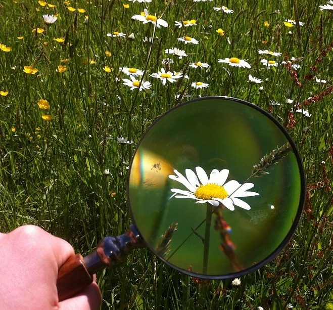
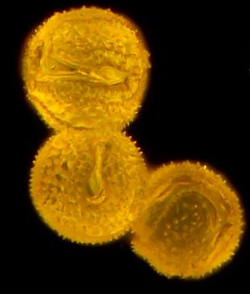
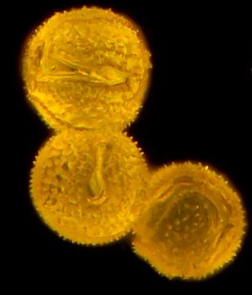

A good magnifyng glass can
open up a whole new micro-world for children. It does this in
two ways: most obviously, it makes things look bigger, but
there is also the effect of just concentrating attention on
small details which the eye might usually just pass over.
The strength of magnifying glasses is commonly expressed in terms a of a magnification factor - for example 5x or 2x. In general, higher strength magnifiers tend to be smaller, since the fatter lenses required for high magnification are easier to achieve in a smaller size. Higher magnifications also tend to experience more optical distortion. My suggestion would be to go for a real glass lens (clearer and less likely to scratch than plastic) with a diameter of 6-8cm and magnifying power between 3 and 10. You should be able to buy a perfectly decent magnifier for £10 or less.
The first thing to do with a magnifier is to play with it. A little obvious safety advice first: NEVER look at the sun through it - in fact don't look directly at the sun anyway, it can seriously damage your eyes. Also, as we soon discovered when I was a child, strong sunlight focussed to a point through a magnifier can burn, and is quite capable of setting fire to paper. Children are bound to want to try this, so you might as well get them to do it whilst you are watching.
Now start by holding the glass close to your eye and approach a small object, or some writing. You will find that there is a best distance from the object at which the image they see is nice and sharp and magnified. If you hold the glass there and move your eye back, the magnification will stay roughly the same. This is the best way to use a magnifying glass to enlarge objects. Now try something different - place the glass close to your eye and look through it at a fairly distant object (a few metres away will do, but you could try a tree). It should look fairly unmagnified, but probably rather blurred. Now move the glass slowly away from you to arms length. What do you see as you do this? You will need physics at A level or above to explain why this happens, but it is fun to experience it anyway. Once you have tried for yourself, you will be better able to introduce it to children.
Next they can start to explore the world with the magnifier. A good place to start is to examine the back of their own hand. Can they see little hairs? Veins? What about patterns in the skin itself? Turning the hand over, can they see their fingerprints? Look at all the little lines on the palm of the hand. Do different people have different lines?
It is worth taking a magnifying glass on trips into the countryside or to a beach, where it will help to sharpen children's appreciation of natural objects. However, at home the garden will provide many interesting things to study.
The obvious place to start is with flowers. Can they see the stamens and the pollen grains on their surface? You can explain that these are sticky and attach themselves to the legs and body of flying insects which visit a flower, so they can be transferred to another flower where they will fertilise the eggs contained in the base of the flower, forming seeds. If a child brushes a finger against the stamens they should find that pollen grains will stick to it. If their eyesight is very good, they might just be able to see the shape of the pollen grains through their magnifier - though a microscope is really required to see details. The grains are often beautiful, and their form varies a lot from one type of plant to another. The image on the right shows pollen grains from a dandelion. The small spikes on the surface help to make them sticky. You could encourage children to perfrom the role of a bee, by moving pollen from one flower to another using a soft paintbrush.
Other features of plants to examine through a magnifying glass include veins in the leaves, which carry fluids round a plant, in a similar way to the veins and arteries which transport blood around our bodies (though of course there is no heart to pump the fluid round in a plant). Many plants will also show fine hairs on their stems and leaves, and also on their roots, where they help to take up water and nutrients from the soil.
Insects and other invertebrates (woodlice, spiders, centipedes, worms etc) - often called "minibeasts" - look much more exciting through a magnifying glass, since this reveals the structure and texture of their bodies. First you need to find your minibeasts. One good way is to turn over stones or logs and see what creatures are hiding underneath them. You can also make a simple pitfall trap, using an empty plastic pot, such as a yoghurt pot. This can be set into a hole in the garden so that passing creatures fall in, or you can use bait (such a small piece of fruit) to attract them. You could try different baits, to see whether this affects what you catch. Be sure to check your trap regularly, so any creatures it catches will not starve or drown. You can also see what creatures you can find in soil or leaf litter, and in summer you can use a sweep net to find what creatures live in tall grass and other wild plants. A fine gauze fishing net will work well, or you can make your own from an old pillowcase and a wire coat hanger. Sweep it through the tops of plants and see what you catch!
Once you have some minibeasts you can study them with your magnifying glass. A white plastic container, such as a margarine tub, is ideal to hold your minibeast for study. Does it have legs? How many? Can you see a mouth? Antennae? Does the body have separate sections? Can you identify it? The Woodland Trust has some useful guides here which may help you. Children may want to keep minibeasts in a home, such as a jar with a perforated lid. It is not a good idea to keep them for long, or they will probably die, and it is important to provide them with food and shelter and to keep them somewhere cool and shady. Children who keep a Nature Journal can draw pictures of the creatures they find in their journal.
In addition to living things, children may enjoy taking a closer look at the non-biological world. What does the magnifier reveal about sand (are the grains all similar in shape and colour, or do they vary? are they smooth or jagged?) and soil (can they see mineral grains, fibres, tiny creatures?)? Crystals, such as grains of salt or sugar are also worth looking at. Can they see the shape of them? A glass of water placed in the freezer for half an hour will start to grow ice crystals on its surface, which will look beautiful through a magnifier. A ground frost in winter provides an opportunity to marvel at the tiny ice crystals on blades of grass, though they will need to take their magnifier outdoors, since the frost will rapidly melt if brought indoors. You can also grow your own crystals using salt or sugar and see what shape they are, and many crystal growing kits are available commercially.

The strength of magnifying glasses is commonly expressed in terms a of a magnification factor - for example 5x or 2x. In general, higher strength magnifiers tend to be smaller, since the fatter lenses required for high magnification are easier to achieve in a smaller size. Higher magnifications also tend to experience more optical distortion. My suggestion would be to go for a real glass lens (clearer and less likely to scratch than plastic) with a diameter of 6-8cm and magnifying power between 3 and 10. You should be able to buy a perfectly decent magnifier for £10 or less.
The first thing to do with a magnifier is to play with it. A little obvious safety advice first: NEVER look at the sun through it - in fact don't look directly at the sun anyway, it can seriously damage your eyes. Also, as we soon discovered when I was a child, strong sunlight focussed to a point through a magnifier can burn, and is quite capable of setting fire to paper. Children are bound to want to try this, so you might as well get them to do it whilst you are watching.
Now start by holding the glass close to your eye and approach a small object, or some writing. You will find that there is a best distance from the object at which the image they see is nice and sharp and magnified. If you hold the glass there and move your eye back, the magnification will stay roughly the same. This is the best way to use a magnifying glass to enlarge objects. Now try something different - place the glass close to your eye and look through it at a fairly distant object (a few metres away will do, but you could try a tree). It should look fairly unmagnified, but probably rather blurred. Now move the glass slowly away from you to arms length. What do you see as you do this? You will need physics at A level or above to explain why this happens, but it is fun to experience it anyway. Once you have tried for yourself, you will be better able to introduce it to children.
Next they can start to explore the world with the magnifier. A good place to start is to examine the back of their own hand. Can they see little hairs? Veins? What about patterns in the skin itself? Turning the hand over, can they see their fingerprints? Look at all the little lines on the palm of the hand. Do different people have different lines?
It is worth taking a magnifying glass on trips into the countryside or to a beach, where it will help to sharpen children's appreciation of natural objects. However, at home the garden will provide many interesting things to study.
The obvious place to start is with flowers. Can they see the stamens and the pollen grains on their surface? You can explain that these are sticky and attach themselves to the legs and body of flying insects which visit a flower, so they can be transferred to another flower where they will fertilise the eggs contained in the base of the flower, forming seeds. If a child brushes a finger against the stamens they should find that pollen grains will stick to it. If their eyesight is very good, they might just be able to see the shape of the pollen grains through their magnifier - though a microscope is really required to see details. The grains are often beautiful, and their form varies a lot from one type of plant to another. The image on the right shows pollen grains from a dandelion. The small spikes on the surface help to make them sticky. You could encourage children to perfrom the role of a bee, by moving pollen from one flower to another using a soft paintbrush.
Other features of plants to examine through a magnifying glass include veins in the leaves, which carry fluids round a plant, in a similar way to the veins and arteries which transport blood around our bodies (though of course there is no heart to pump the fluid round in a plant). Many plants will also show fine hairs on their stems and leaves, and also on their roots, where they help to take up water and nutrients from the soil.
Insects and other invertebrates (woodlice, spiders, centipedes, worms etc) - often called "minibeasts" - look much more exciting through a magnifying glass, since this reveals the structure and texture of their bodies. First you need to find your minibeasts. One good way is to turn over stones or logs and see what creatures are hiding underneath them. You can also make a simple pitfall trap, using an empty plastic pot, such as a yoghurt pot. This can be set into a hole in the garden so that passing creatures fall in, or you can use bait (such a small piece of fruit) to attract them. You could try different baits, to see whether this affects what you catch. Be sure to check your trap regularly, so any creatures it catches will not starve or drown. You can also see what creatures you can find in soil or leaf litter, and in summer you can use a sweep net to find what creatures live in tall grass and other wild plants. A fine gauze fishing net will work well, or you can make your own from an old pillowcase and a wire coat hanger. Sweep it through the tops of plants and see what you catch!
Once you have some minibeasts you can study them with your magnifying glass. A white plastic container, such as a margarine tub, is ideal to hold your minibeast for study. Does it have legs? How many? Can you see a mouth? Antennae? Does the body have separate sections? Can you identify it? The Woodland Trust has some useful guides here which may help you. Children may want to keep minibeasts in a home, such as a jar with a perforated lid. It is not a good idea to keep them for long, or they will probably die, and it is important to provide them with food and shelter and to keep them somewhere cool and shady. Children who keep a Nature Journal can draw pictures of the creatures they find in their journal.
In addition to living things, children may enjoy taking a closer look at the non-biological world. What does the magnifier reveal about sand (are the grains all similar in shape and colour, or do they vary? are they smooth or jagged?) and soil (can they see mineral grains, fibres, tiny creatures?)? Crystals, such as grains of salt or sugar are also worth looking at. Can they see the shape of them? A glass of water placed in the freezer for half an hour will start to grow ice crystals on its surface, which will look beautiful through a magnifier. A ground frost in winter provides an opportunity to marvel at the tiny ice crystals on blades of grass, though they will need to take their magnifier outdoors, since the frost will rapidly melt if brought indoors. You can also grow your own crystals using salt or sugar and see what shape they are, and many crystal growing kits are available commercially.